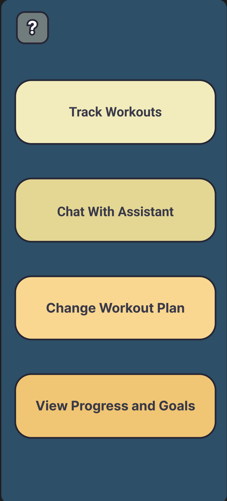
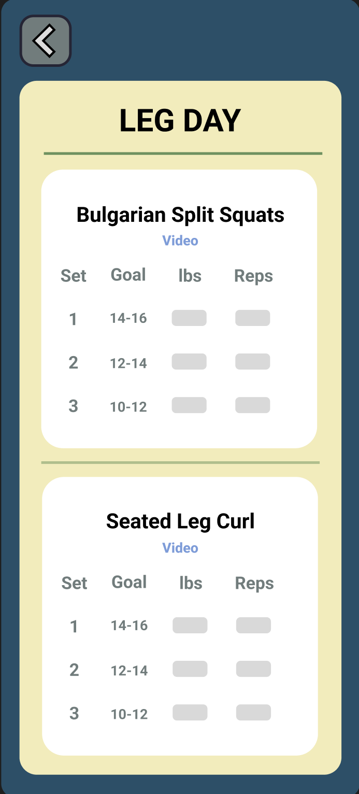
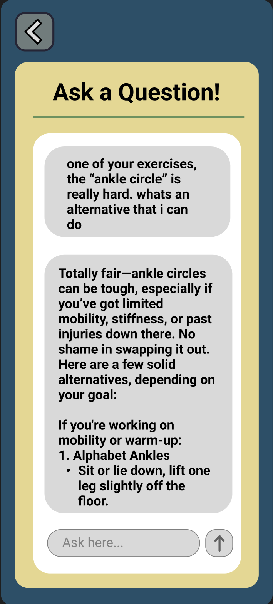
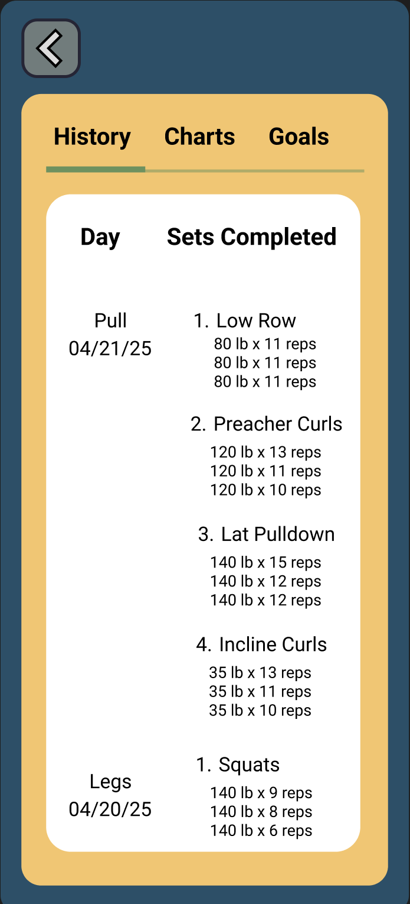
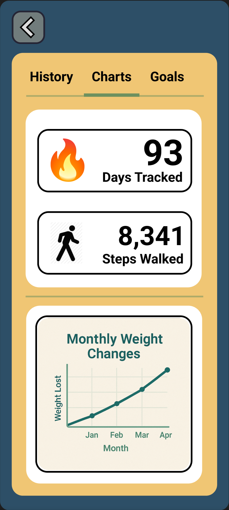
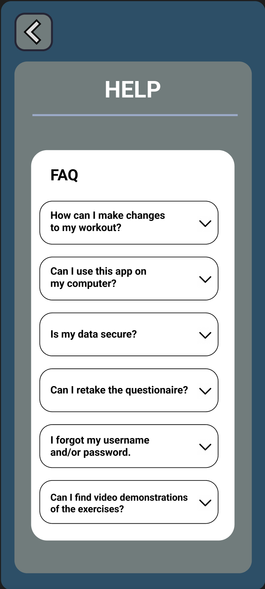

Prototyping
We created a high-fidelity prototype in Figma to demonstrate all core user flows, from tracking workouts to receiving assistance and viewing progress.







These screens were reviewed by peers and older adults, and their feedback helped refine text size, layout simplicity, and feature prioritization.